SECCIÓN 9P
PUERTAS
Precaución: Desconecte el cable negativo de la batería antes de desmontar o instalar cualquier unidad eléctrica o cuando exista la posibilidad de que una herramienta o equipo pueda entrar en contacto con bornes eléctricos expuestos. La desconexión de dicho cable ayudará a evitar lesiones personales y daños al vehículo. La llave de contacto debe estar en posición LOCK a menos que se indique lo contrario.
ESPECIFICACIONES
Especificaciones de apriete de la sujeción
| Aplicación | N•m | Lb-pie | Lb-pulg. |
| Tornillos de fijación de la bisagra de la puerta a la carrocería | 35 | 26 | - |
| Tornillos de fijación de la bisagra a la puerta | 15 | 11 | - |
| Tornillos de fijación de la varilla para mantener abierta la puerta a la carrocería | 35 | 26 | - |
| Tornillos de fijación de la varilla para mantener abierta la puerta a la puerta | 5 | - | 44 |
| Tornillos de la cerradura de la puerta | 8 | - | 71 |
| Tornillos del cerradero de la puerta | 24 | 18 | - |
| Tornillos del soporte del tirador de la puerta | 3,5 | - | 31 |
| Tornillos del carril guía | 7 | - | 62 |
| Tornillo del tirador interior de la puerta | 3 | - | 27 |
| Tornillos del tirador exterior de puerta | 4,5 | - | 40 |
| Tuercas del elevalunas | 7 | - | 62 |
| Cerradura del portón trasero | 22 | 16 | - |
| Tornillos del cierre del portón trasero | 8 | - | 7 |
| Vástago del muelle de gas del portón trasero | 22 | 16 | - |
ESQUEMAS Y DIAGRAMAS DE CABLEADO
Cerraduras eléctricas de las puertas (conducción a izquierdas)
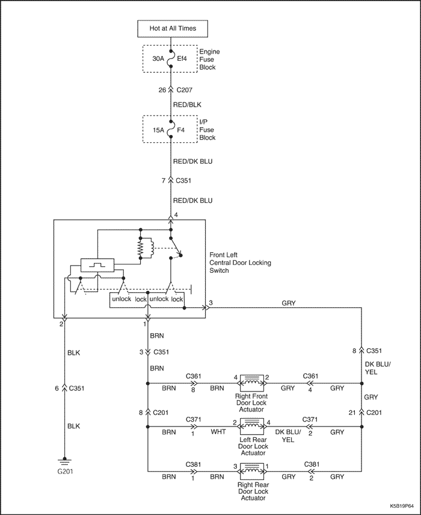


Cerraduras eléctricas de las puertas (conducción a derechas)
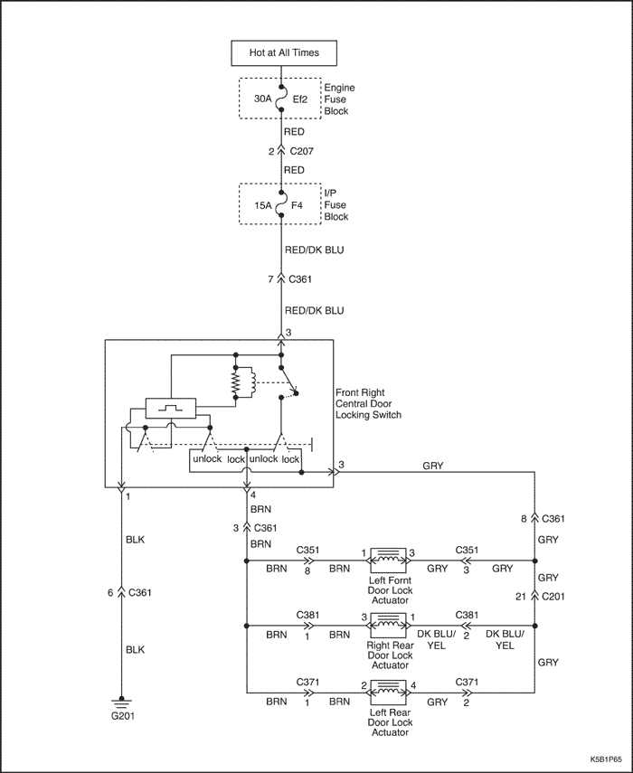
Cerraduras de las puertas (con control antirrobo: IZQ)
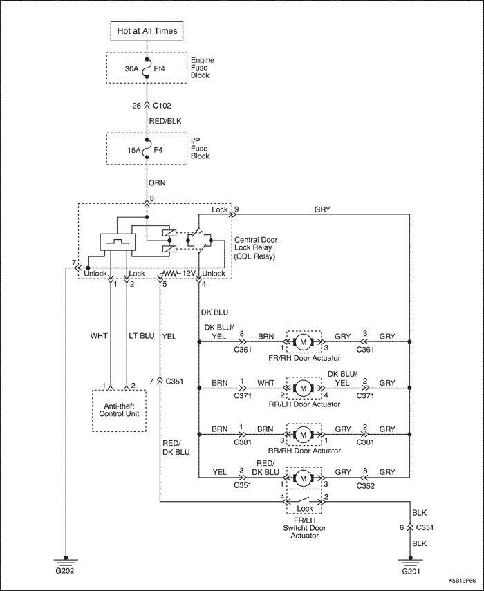
Cerraduras de las puertas (con control antirrobo: DCHAS)
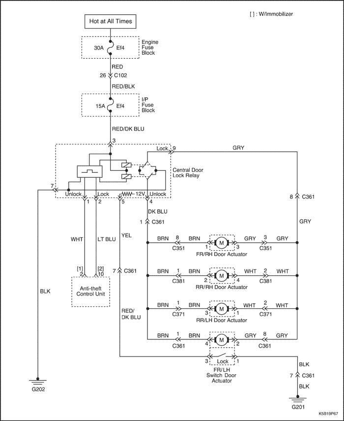
Elevalunas eléctricos (sólo puertas delanteras)
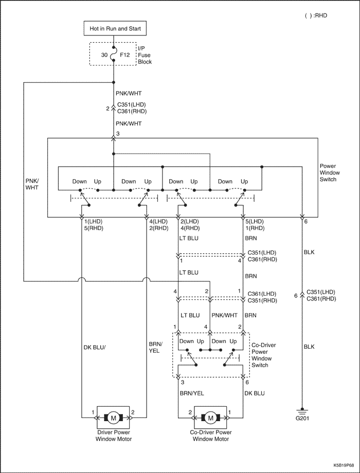
Circuito del elevalunas eléctrico
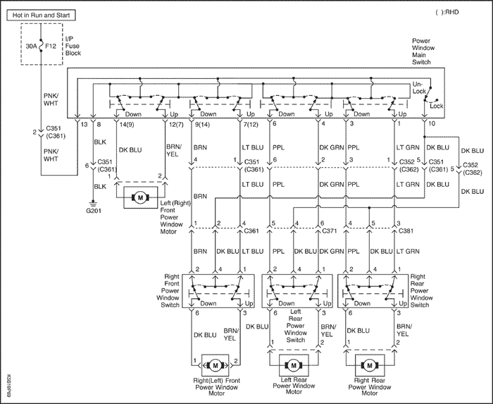
DIAGNÓSTICO
Elevalunas eléctricos
Sistema con elevalunas eléctricos sólo en las ventanillas delanteras, uno o los dos elevalunas no funcionan
Precaución: Cuando la alimentación de corriente a los motores elevalunas provenga directamente de una batería con cables puente, asegúrese de que uno de los puentes incluya un fusible. Si los puentes se tocan accidentalmente, el fusible evitará que se produzcan chispas y quemaduras por el calentamiento repentino de algún terminal.
| Paso | Medida | Valor(es) | Sí | No |
| 1 | - Gire la llave de contacto a la posición ON.
- Intente accionar los dos elevalunas eléctricos.
¿Funcionan los dos elevalunas? | - | Vaya al Paso 11 | Vaya al Paso 2 |
| 2 | Inspeccione visualmente la conexión en el interruptor doble de los elevalunas eléctricos. ¿Está el conector eléctrico correctamente unido al interruptor? | - | Vaya al Paso 4 | Vaya al Paso 3 |
| 3 | Acople correctamente el conector eléctrico al interruptor doble de los elevalunas eléctricos. ¿Se ha realizado la reparación? | - | Sistema OK | - |
| 4 | - Desenchufe el conector eléctrico del interruptor doble de los elevalunas eléctricos.
- Gire la llave de contacto a la posición ON.
- Compruebe la tensión en el terminal 3 del conector del interruptor principal de los elevalunas eléctricos.
¿El valor de la tensión es el mismo que el especificado? | 11-14 V | Vaya al Paso 9 | Vaya al Paso 5 |
| 5 | Compruebe el fusible F12. ¿Está fundido? | - | Vaya al Paso 6 | Vaya al Paso 7 |
| 6 | - Compruebe si hay un cortocircuito y repárelo si es necesario.
- Sustituya el fusible fundido.
¿Se ha realizado la reparación? | - | Sistema OK | - |
| 7 | - Gire la llave de contacto a la posición ON.
- Compruebe las tensiones en el fusible F12.
¿El valor de la tensión es el mismo que el especificado? | 11-14 V | Vaya al Paso 9 | Vaya al Paso 8 |
| 8 | Repare la alimentación de corriente al fusible que no indicaba tensión de la batería con la llave de contacto en la posición ON. ¿Se ha realizado la reparación? | - | Sistema OK | - |
| 9 | Con el interruptor doble de los elevalunas eléctricos todavía desconectado, compruebe con un ohmímetro la resistencia entre masa y el terminal 6 del conector de dicho interruptor doble. ¿Es igual la resistencia al valor especificado? | ≈ 0 Ω | Vaya al Paso 11 | Vaya al Paso 10 |
| 10 | Repare el circuito abierto entre masa y el terminal 6 del conector del interruptor doble de los elevalunas eléctricos. ¿Se ha realizado la reparación? | - | Sistema OK | - |
| 11 | - Desmonte el panel de guarnecido de la puerta en la que el elevalunas eléctrico no funciona.
- Acerque la batería de un vehículo a la puerta para que el motor del elevalunas pueda recibir alimentación de corriente directa de la batería por medio de cables puente.
- Desenchufe el conector de dos patillas del motor del elevalunas de la puerta.
Importante: Para evitar que se funda el fusible del cable puente, no deje que los dos cables puente se toquen. - Conecte un cable puente entre el terminal negativo de la batería y uno de los terminales del conector de dos patillas del motor del elevalunas.
- Conecte un cable puente con fusible entre el terminal positivo de la batería y el otro terminal del conector de dos patillas del motor del elevalunas. A menos que el motor esté al final de su recorrido, la ventanilla debería moverse con los puentes conectados.
- Para mover la ventanilla en la otra dirección, invierta las conexiones de los cables puente en el conector del motor del elevalunas.
¿Funciona el elevalunas en las dos direcciones cuando se acciona el motor directamente por medio de una batería? | - | Vaya al Paso 13 | Vaya al Paso 12 |
| 12 | Sustituya el motor del elevalunas. ¿Se ha realizado la reparación? | - | Sistema OK | - |
| 13 | - Antes de volver a enchufar el conector de dos patillas del motor del elevalunas, conecte un ohmímetro entre los terminales para comprobar la resistencia del motor.
- Anote la lectura del ohmímetro con la resistencia del motor.
- Vuelva a enchufar el conector del motor y monte de nuevo el panel de guarnecido.
- Desenchufe el conector eléctrico del interruptor doble de los elevalunas eléctricos.
- En el conector del interruptor doble de los elevalunas eléctricos, compruebe con un ohmímetro la resistencia entre los terminales que derivan al motor.
¿Es la resistencia en el conector del interruptor aproximadamente la misma que la resistencia que se midió con anterioridad en el conector del motor? | - | Vaya al Paso 15 | Vaya al Paso 14 |
| 14 | Repare el circuito abierto entre el motor y el interruptor del elevalunas. ¿Se ha realizado la reparación? | - | Sistema OK | - |
| 15 | Sustituya el interruptor del elevalunas eléctrico. ¿Se ha realizado la reparación? | - | Sistema OK | - |
Sistema con elevalunas eléctricos en las ventanillas delanteras y traseras, uno o los dos elevalunas delanteros no funcionan
Precaución: Cuando la alimentación de corriente a los motores elevalunas provenga directamente de una batería con cables puente, asegúrese de que uno de los puentes incluya un fusible. Si los puentes se tocan accidentalmente, el fusible evitará que se produzcan chispas y quemaduras por el calentamiento repentino de algún terminal.
| Paso | Medida | Valor(es) | Sí | No |
| 1 | - Gire la llave de contacto a la posición ON.
- Intente accionar los dos elevalunas eléctricos delanteros.
¿Funcionan los dos elevalunas? | - | Vaya al Paso 12 | Vaya al Paso 2 |
| 2 | Inspeccione visualmente la conexión en el interruptor principal de los elevalunas eléctricos. ¿Está el conector eléctrico correctamente unido al interruptor principal? | - | Vaya al Paso 4 | Vaya al Paso 3 |
| 3 | Acople correctamente el conector eléctrico al interruptor principal de los elevalunas eléctricos. ¿Se ha realizado la reparación? | - | Sistema OK | - |
| 4 | - Desenchufe el conector eléctrico del interruptor principal de los elevalunas eléctricos.
- Gire la llave de contacto a la posición ON.
- Compruebe la tensión en el terminal 13 del conector del interruptor principal de los elevalunas eléctricos.
¿El valor de la tensión es el mismo que el especificado? | 11-14 V | Vaya al Paso 10 | Vaya al Paso 5 |
| 5 | Compruebe el fusible F12. ¿Está fundido el fusible F12? | - | Vaya al Paso 6 | Vaya al Paso 7 |
| 6 | - Compruebe si hay algún cortocircuito y repárelo si fuera necesario.
- Sustituya el fusible fundido.
¿Se ha realizado la reparación? | - | Sistema OK | - |
| 7 | - Gire la llave de contacto a la posición ON.
- Compruebe las tensiones en el fusible F12.
¿Es la tensión en F12 igual al valor especificado? | 11-14 V | Vaya al Paso 9 | Vaya al Paso 8 |
| 8 | Repare la alimentación de corriente al fusible que no indicaba tensión de la batería con la llave de contacto en la posición ON. ¿Se ha realizado la reparación? | - | Sistema OK | - |
| 9 | Repare el circuito abierto entre el fusible F12 y el terminal 13 del interruptor del elevalunas eléctrico. ¿Se ha realizado la reparación? | - | Sistema OK | - |
| 10 | Con el interruptor principal de los elevalunas eléctricos todavía desconectado, compruebe con un ohmímetro la resistencia entre masa y el terminal 8 del conector del interruptor del elevalunas eléctrico. ¿Es igual la resistencia al valor especificado? | ≈ 0 Ω | Vaya al Paso 12 | Vaya al Paso 11 |
| 11 | Repare el circuito abierto entre masa y el terminal 8 del conector del interruptor principal de los elevalunas eléctricos. ¿Se ha realizado la reparación? | - | Sistema OK | - |
| 12 | - Desmonte el panel de guarnecido de la puerta delantera en la que el elevalunas eléctrico no funciona.
- Acerque la batería de un vehículo a la puerta para que el motor del elevalunas pueda recibir alimentación de corriente directa de la batería por medio de cables puente.
- Desenchufe el conector de dos patillas del motor del elevalunas de la puerta.
- Conecte un cable puente entre el terminal negativo de la batería y uno de los terminales del conector de dos patillas del motor del elevalunas.
- Conecte un cable puente con fusible entre el terminal positivo de la batería y el otro terminal del conector de dos patillas del motor del elevalunas. A menos que el motor esté al final de su recorrido, la ventanilla debería moverse con los puentes conectados.
- Para mover la ventanilla en la otra dirección, invierta las conexiones de los cables puente en el conector del motor del elevalunas.
¿Funciona el elevalunas en las dos direcciones cuando se acciona el motor directamente por medio de una batería? Importante: Para evitar que se funda el fusible del cable puente, no deje que los dos cables puente se toquen. | - | Vaya al Paso 14 | Vaya al Paso 13 |
| 13 | Sustituya el motor del elevalunas. ¿Se ha realizado la reparación? | - | Sistema OK | - |
| 14 | - Antes de volver a enchufar el conector de dos patillas del motor del elevalunas, conecte un ohmímetro entre los terminales para comprobar la resistencia del motor.
- Anote la lectura del ohmímetro con la resistencia del motor.
- Vuelva a enchufar el conector del motor y monte de nuevo el panel de guarnecido.
- Desenchufe el conector eléctrico del interruptor principal de los elevalunas eléctricos.
- En el conector del interruptor principal de los elevalunas eléctricos, compruebe con un ohmímetro la resistencia entre los terminales que derivan al motor que fue probado en el Paso 9.
¿Es la resistencia en el conector del interruptor principal aproximadamente la misma que la resistencia que se midió con anterioridad en el conector del motor? | - | Vaya al Paso 16 | Vaya al Paso 15 |
| 15 | Repare el circuito abierto entre el motor y el interruptor del elevalunas. ¿Se ha realizado la reparación? | - | Sistema OK | - |
| 16 | Sustituya el interruptor del elevalunas eléctrico. ¿Se ha realizado la reparación? | - | Sistema OK | - |
Sistema con elevalunas eléctricos en las ventanillas delanteras y traseras, uno o los dos elevalunas traseros no funcionan
Precaución: Cuando la alimentación de corriente a los motores elevalunas provenga directamente de una batería con cables puente, asegúrese de que uno de los puentes incluya un fusible. Si los puentes se tocan accidentalmente, el fusible evitará que se produzcan chispas y quemaduras por el calentamiento repentino de algún terminal.
| Paso | Medida | Valor(es) | Sí | No |
| 1 | - Gire la llave de contacto a la posición ON.
- Asegúrese de que el interruptor principal de los elevalunas eléctricos no tiene seleccionada la posición de bloqueo de la ventanilla.
¿Funcionan los dos elevalunas eléctricos traseros? | - | Vaya al Paso 18 | Vaya al Paso 2 |
| 2 | Inspeccione visualmente la conexión en el interruptor principal de los elevalunas eléctricos. ¿Está el conector eléctrico correctamente unido al interruptor principal? | - | Vaya al Paso 4 | Vaya al Paso 3 |
| 3 | Acople correctamente el conector eléctrico al interruptor principal de los elevalunas eléctricos. ¿Se ha realizado la reparación? | - | Sistema OK | - |
| 4 | - Desenchufe el conector eléctrico del interruptor principal de los elevalunas eléctricos.
- Gire la llave de contacto a la posición ON.
- Compruebe la tensión en el terminal 13 del conector del interruptor principal de los elevalunas eléctricos.
¿El valor de la tensión es el mismo que el especificado? | 11-14 V | Vaya al Paso 16 | Vaya al Paso 5 |
| 5 | Compruebe el fusible F12. ¿Está fundido el fusible F12? | - | Vaya al Paso 6 | Vaya al Paso 7 |
| 6 | - Compruebe si hay algún cortocircuito y repárelo si fuera necesario.
- Sustituya el fusible fundido.
¿Se ha realizado la reparación? | - | Sistema OK | - |
| 7 | - Gire la llave de contacto a la posición ON.
- Compruebe las tensiones en el fusible F12.
¿Es la tensión en F12 igual al valor especificado? | 11-14 V | Vaya al Paso 9 | Vaya al Paso 8 |
| 8 | Repare la alimentación de corriente al fusible que no indicaba tensión de la batería con la llave de contacto en la posición ON. ¿Se ha realizado la reparación? | - | Sistema OK | - |
| 9 | Repare el circuito abierto entre el fusible F12 y el terminal 13 del interruptor principal del elevalunas eléctrico. ¿Se ha realizado la reparación? | - | Sistema OK | - |
| 10 | Con el interruptor principal de los elevalunas eléctricos todavía desconectado, compruebe con un ohmímetro la resistencia entre masa y el terminal 8 del conector de dicho interruptor. ¿Es igual la resistencia al valor especificado? | ≈ 0 Ω | Vaya al Paso 12 | Vaya al Paso 11 |
| 11 | Repare el circuito abierto entre masa y el terminal 8 del conector del interruptor del elevalunas eléctrico. ¿Se ha realizado la reparación? | - | Sistema OK | - |
| 12 | - Desmonte el panel de guarnecido de la puerta trasera en la que el elevalunas eléctrico no funciona.
- Acerque la batería de un vehículo a la puerta para que el motor del elevalunas pueda recibir alimentación de corriente directa de la batería por medio de cables puente.
- Desenchufe el conector de dos patillas del motor del elevalunas de la puerta.
- Conecte un cable puente entre el terminal negativo de la batería y uno de los terminales del conector de dos patillas del motor del elevalunas.
- Conecte un cable puente con fusible entre el terminal positivo de la batería y el otro terminal del conector de dos patillas del motor del elevalunas. A menos que el motor esté al final de su recorrido, la ventanilla debería moverse con los puentes conectados.
- Para mover la ventanilla en la otra dirección, invierta las conexiones de los cables puente en el conector del motor del elevalunas.
¿Funciona el elevalunas en las dos direcciones cuando se acciona el motor directamente por medio de una batería? Importante: Para evitar que se funda el fusible del cable puente, no deje que los dos cables puente se toquen. | - | Vaya al Paso 14 | Vaya al Paso 13 |
| 13 | Sustituya el motor del elevalunas eléctrico. ¿Se ha realizado la reparación? | - | Sistema OK | - |
| 14 | - Asegúrese de que el bloqueo del elevalunas del interruptor principal esté desactivado.
- Gire la llave de contacto a la posición ON.
- En el conector del interruptor del elevalunas eléctrico, compruebe la tensión en el terminal 14.
¿El valor de la tensión es el mismo que el especificado? | 11-14V | Vaya al Paso 15 | Vaya al Paso 23 |
| 15 | - En el conector de dos patillas del motor del elevalunas, mida con un ohmímetro la resistencia de dicho motor. Anote la resistencia.
- Vuelva a enchufar el conector de dos patillas del motor del elevalunas.
- Desenchufe el conector del interruptor del elevalunas eléctrico trasero.
- Utilice un ohmímetro para medir la resistencia entre los terminales 6 y 3 del conector del interruptor del elevalunas eléctrico trasero.
¿Es la resistencia medida en el conector del interruptor del elevalunas eléctrico trasero la misma que la resistencia medida con anterioridad en el conector del motor del elevalunas eléctrico trasero? | - | Vaya al Paso 17 | Vaya al Paso 16 |
| 16 | Repare el circuito abierto entre el interruptor del elevalunas eléctrico trasero y el conector del motor de dicho elevalunas. ¿Se ha realizado la reparación? | - | Sistema OK | - |
| 17 | - Desmonte el interruptor del elevalunas eléctrico trasero para poder comprobarlo.
- Conecte un ohmímetro entre los terminales 2 y 6 del interruptor del elevalunas eléctrico trasero y observe los datos del ohmímetro.
- Conecte un ohmímetro entre los terminales 1 y 3 del interruptor del elevalunas eléctrico trasero y observe los datos del ohmímetro.
En estas dos comprobaciones, ¿indicó el ohmímetro el valor especificado? | ≈ 0 Ω | Vaya al Paso 19 | Vaya al Paso 18 |
| 18 | Sustituya el interruptor del elevalunas eléctrico trasero. ¿Se ha realizado la reparación? | - | Sistema OK | - |
| 19 | - Con el interruptor del elevalunas eléctrico trasero desmontado para su comprobación, conecte un ohmímetro entre los terminales 2 y 6 y ponga el interruptor en la posición DOWN (bajar). Observe los datos del ohmímetro.
- Conecte el ohmímetro entre los terminales 1 y 3 y ponga el interruptor en la posición UP (subir). Observe los datos del ohmímetro.
En estas dos comprobaciones, ¿indicó el ohmímetro el valor especificado? | ≈ 0 Ω | Vaya al Paso 20 | Vaya al Paso 18 |
| 20 | - Vuelva a enchufar el conector del interruptor del elevalunas eléctrico trasero.
- Desenchufe el conector eléctrico del interruptor principal de los elevalunas eléctricos.
- Utilice un ohmímetro para medir la resistencia en el interruptor principal de los elevalunas eléctricos entre los terminales 6 y 4 si está probando el elevalunas trasero izquierdo, o entre los terminales 3 y 1 está probando el elevalunas trasero derecho.
¿Es la resistencia igual a la resistencia medida con anterioridad en el conector del motor? | - | Vaya al Paso 22 | Vaya al Paso 21 |
| 21 | Repare el circuito abierto entre el interruptor principal de los elevalunas eléctricos y el interruptor del elevalunas trasero. ¿Se ha realizado la reparación? | - | Sistema OK | - |
| 22 | Sustituya el interruptor principal de los elevalunas eléctricos. ¿Se ha realizado la reparación? | - | Sistema OK | - |
| 23 | - Desmonte el interruptor principal de los elevalunas eléctricos, pero no desenchufe el conector eléctrico.
- Asegúrese de que el bloqueo del elevalunas está desactivado.
- Gire la llave de contacto a la posición ON.
- Compruebe la tensión en el terminal 10 del interruptor principal de los elevalunas eléctricos.
¿El valor de la tensión es el mismo que el especificado? | 11-14 V | Vaya al Paso 21 | Vaya al Paso 22 |
MANTENIMIENTO Y REPARACIÓN
SERVICIO EN EL VEHÍCULO
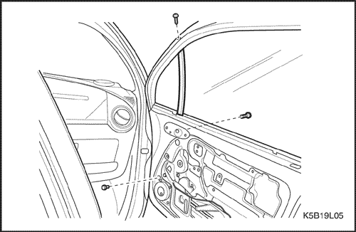
Canal guía del cristal de la puerta delantera
Procedimiento de desmontaje
- Desmonte el guarnecido de estanqueidad de la puerta delantera. Consulte el apartado "Guarnecido de estanqueidad de la puerta" de esta sección.
- Desmonte el espejo retrovisor exterior de la puerta delantera. Consulte la Sección 9L, Lunas y espejos.
- Quite los tornillos y el carril guía de la puerta.
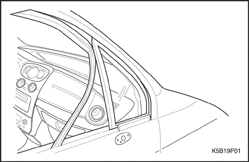
- Desmonte el canal guía del cristal.
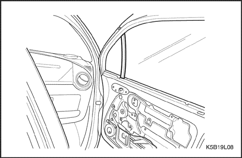
Procedimiento de montaje
- Monte el canal guía del cristal.
- Monte la barra divisoria con los tornillos.
- Monte el espejo retrovisor exterior. Consulte la Sección 9L, Lunas y espejos.
- Monte el guarnecido de estanqueidad de la puerta delantera. Consulte el apartado "Guarnecido de estanqueidad de la puerta" de esta sección.
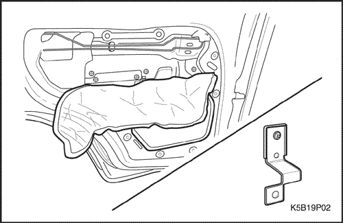
Canal guía del cristal de la puerta trasera
Procedimiento de desmontaje
- Desmonte de la puerta trasera el burlete del canal interior. Consulte la Sección 9G, Guarnecido interior.
- Desmonte de la puerta trasera el burlete del canal exterior. Consulte la Sección 9G, Guarnecido interior.
- Desmonte el panel de guarnecido de la puerta trasera. Consulte la Sección 9G, Guarnecido interior.
- Desmonte el guarnecido de estanqueidad de la puerta trasera.
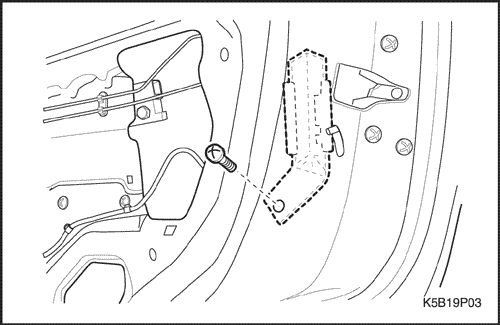
- Quite el tornillo y la pieza de guía.
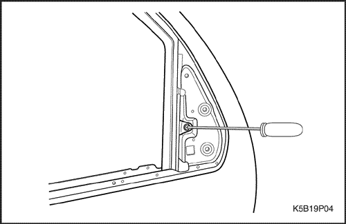
- Desmonte el carril guía superior y el canal de guía del cristal.
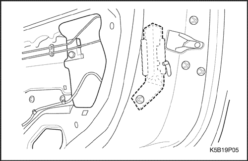
Procedimiento de montaje
- Monte el carril guía superior y el canal de guía del cristal de la puerta trasera.
- Monte la pieza de la guía con su tornillo.
- Monte el guarnecido de estanqueidad de la puerta trasera.
- Monte el panel de guarnecido de la puerta trasera. Consulte la Sección 9G, Guarnecido interior.
- Monte el burlete del canal exterior en la puerta trasera. Consulte la Sección 9G, Guarnecido interior.
- Monte el burlete del canal interior en la puerta trasera. Consulte la Sección 9G, Guarnecido interior.
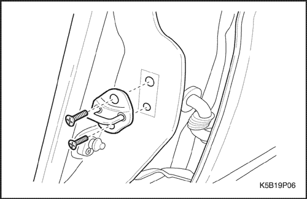
Cerradero de la puerta
Procedimiento de desmontaje
- Quite los tornillos y desmonte el cerradero de la puerta.
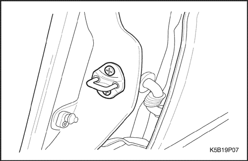
Procedimiento de montaje
Aviso: Metales distintos en contacto directo pueden corroerse rápidamente. Asegúrese de utilizar los elementos de sujeción correctos para evitar una corrosión prematura.
- Monte el cerradero de la puerta con sus tornillos.
Apretar
Apriete los tornillos del cerradero de la puerta hasta 24 N•m (18 lb-pie).
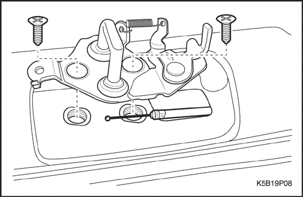
Cerradura del portón trasero
Procedimiento de desmontaje
- Abra y sujete convenientemente el portón trasero.
- Quite los tornillos y la cerradura del portón trasero.
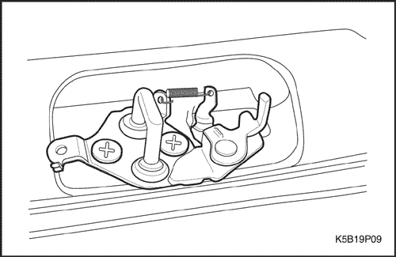
Procedimiento de montaje
Aviso: Dos metales distintos en contacto directo pueden oxidarse rápidamente. Asegúrese de utilizar los elementos de sujeción correctos para evitar una corrosión prematura.
- Conecte el cable.
- Monte la cerradura del portón trasero con sus tornillos.
Apretar
Apriete los tornillos de la cerradura del portón trasero hasta 22 N•m (16 lb-pie).
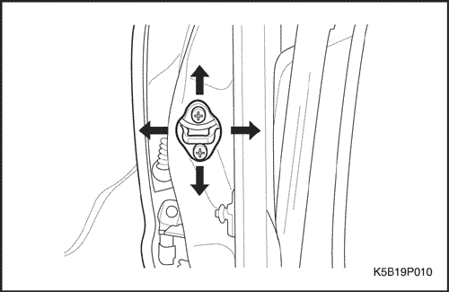
Ajuste del cerradero de la puerta
Aviso: El trinquete de la cerradura (cerradero) de la puerta es una pieza de fijación importante que puede afectar el rendimiento de componentes vitales del sistema, por lo que puede causar gastos de reparación importantes. Si su sustitución llega a ser necesaria, el cerradero de la puerta debe sustituirse por una que tenga la misma referencia de pieza o por una equivalente. No utilice una pieza de repuesto de menor calidad o un diseño sustituto. Los valores de par especificados deben aplicarse durante el montaje para garantizar la sujeción correcta de la pieza.
Aviso: El trinquete de la cerradura de la puerta consiste en un cerradero con dos tornillos roscados en una placa soporte flotante situada en los correspondientes montantes de la carrocería. Esta placa soporte flotante permite que se ajuste el cerradero con facilidad hacia adentro o hacia afuera, hacia arriba o hacia abajo. La puerta queda asegurada en posición de cierre cuando la horquilla de la cerradura salta y engancha el cerradero.
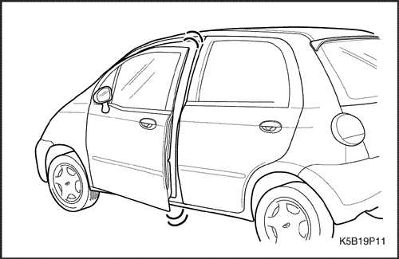
Ajuste hacia atrás/delante
- La puerta debe estar correctamente alineada.
- Cierre la puerta hasta que la horquilla contacte con el cerradero.
- Permanezca al lado de la puerta y muévala hacia fuera y hacia dentro, tocando tan solo el cerradero.
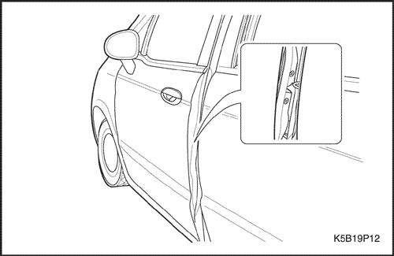
- Se puede ver con facilidad la alineación de la horquilla de la cerradura y del cerradero. La horquilla de la cerradura debe estar perpendicular y caer cerca del centro del cerradero. La horquilla debe caer entre el montante B y el extremo del cerradero.
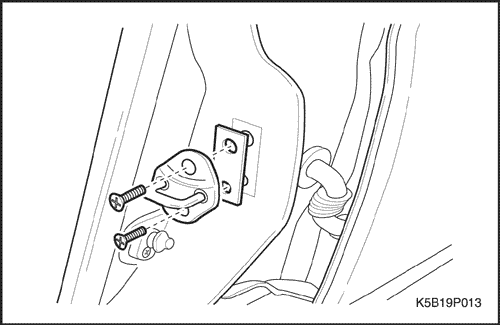
- Si es necesario ajustarlo hacia delante o hacia atrás, siga los siguientes pasos:
- Quite los tornillos del cerradero (1).
- Retire el espaciador con el fin de mover el cerradero hacia la parte trasera del vehículo (2).
- Agregue un espaciador de 2 mm (0,08 pulgadas) para mover el cerradero hacia la parte delantera del vehículo.
- Ponga los tornillos del cerradero.
- Lleve a cabo los ajustes hacia arriba/abajo y hacia dentro/fuera. Consulte el apartado "Ajuste hacia arriba/abajo y hacia afuera/dentro" de esta sección.
Ajuste hacia arriba/hacia abajo y hacia afuera/hacia adentro
Un ajuste de la cerradura hacia arriba y hacia abajo, o hacia adentro y hacia afuera, puede que sea necesario por diferentes razones: daños en el bastidor del vehículo debidos a una colisión, instalación de un nuevo burlete de la puerta, quejas de los clientes por un ruido del viento excesivo o dificultad a la hora de abrir o cerrar la puerta. Para ajustar el cerradero hacia arriba y hacia abajo o hacia adentro y hacia afuera, ejecute el siguiente procedimiento:
- La puerta debe estar correctamente alineada.
- Afloje los tornillos del cerradero.
- La placa soporte flotante puede desplazarse levemente utilizando los extremos de los tornillos del cerradero. Desplace la placa soporte flotante a la posición deseada.
Aviso: Es importante utilizar una lima redonda con extremo plano para no dañar la placa soporte flotante roscada. Los tornillos del cerradero y la placa soporte flotante roscada son piezas importantes que podrían afectar el rendimiento de los componentes y sistemas.
- Si para llevar a cabo un ajuste correcto es necesario desplazar la placa soporte flotante más allá de lo posible, utilice un taladro eléctrico y una lima redonda de 3/8 de pulgada con extremo plano para ampliar la abertura de la carrocería en la dirección deseada.
- Apriete los tornillos del cerradero en la posición correcta.
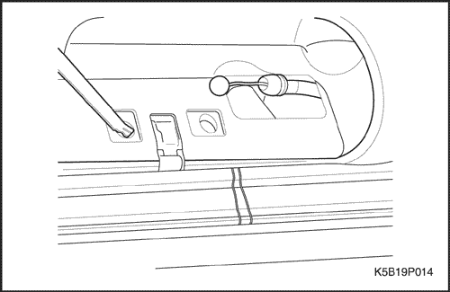
Ajuste de la cerradura del portón trasero
Aviso: La cerradura del portón trasero es una pieza de fijación importante que puede afectar el rendimiento de componentes vitales del sistema, por lo que puede causar gastos de reparación importantes. Si su sustitución llega a ser necesaria, la cerradura del portón trasero debe sustituirse por una que tenga la misma referencia de pieza o por una equivalente. No utilice una pieza de repuesto de menor calidad o un diseño sustituto. Los valores de par especificados deben aplicarse durante el montaje para garantizar la sujeción correcta de la pieza.
Aviso: La cerradura del portón trasero consta de un trinquete con dos tornillos roscados en una placa soporte flotante situada en los correspondientes montantes de la carrocería. Esta placa soporte flotante permite que se ajuste el cerradero con facilidad hacia adentro o hacia afuera, hacia arriba o hacia abajo. El portón trasero queda asegurado en posición de cierre cuando la horquilla de la cerradura salta y engancha la cerradura.
Ajuste hacia adelante/atrás o hacia afuera/adentro
Un ajuste de la cerradura hacia adelante y hacia atrás, o hacia adentro y hacia afuera, puede que sea necesario por diferentes razones: daños en el bastidor del vehículo debidos a una colisión, instalación de un nuevo burlete de la puerta, quejas de los clientes por un ruido del viento excesivo o dificultad a la hora de abrir o cerrar la puerta. Para ajustar la cerradura del portón trasero hacia adelante y hacia atrás o hacia adentro y hacia afuera, realice el siguiente procedimiento:
- El portón trasero debe estar correctamente alineado.
- Afloje los tornillos del cerradero.
- La placa soporte flotante puede desplazarse levemente utilizando los extremos de los tornillos del cerradero. Desplace la placa soporte flotante a la posición deseada.
Aviso: Es importante utilizar una lima redonda con extremo plano para no dañar la placa soporte flotante roscada. Los tornillos del cerradero y la placa soporte flotante roscada son piezas importantes que podrían afectar el rendimiento de los componentes y sistemas.
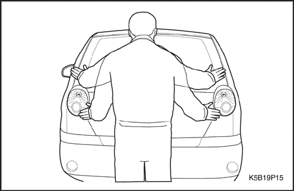
- Si para llevar a cabo un ajuste correcto es necesario desplazar la placa soporte flotante más allá de lo posible, utilice un taladro eléctrico y una lima redonda de 3/8 de pulgada con extremo plano para ampliar la abertura de la carrocería en la dirección deseada.
- Apriete los tornillos del cerradero en la posición correcta.
- Lleve a cabo el ajuste hacia arriba/abajo. Consulte el apartado "Ajuste hacia arriba/abajo" de esta sección.
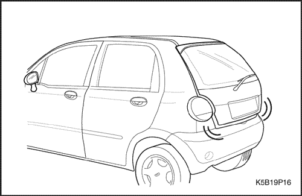
Ajuste hacia arriba/abajo
- El portón trasero debe estar correctamente alineado.
- Cierre el portón trasero hasta que la horquilla de la cerradura contacte con la cerradura.
- Permanezca al lado del portón trasero y muévalo hacia fuera y hacia dentro, tocando únicamente la cerradura.
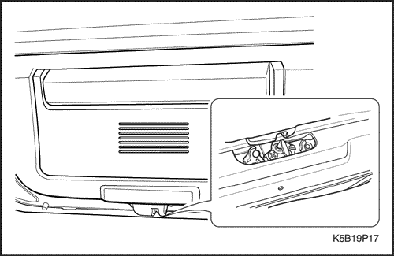
- Se puede ver con facilidad la alineación de la horquilla de la cerradura y del cerradero. La horquilla de la cerradura debe estar perpendicular y caer cerca del centro del cerradero. La horquilla debe caer entre el montante trasero de la carrocería y el extremo de la cerradura.
- Si es necesario ajustarla hacia arriba o hacia abajo, siga los siguientes pasos:
- Quite los tornillos del cerradero.
- Desmonte el espaciador con el fin de mover la cerradura hacia la parte inferior del vehículo.
- Agregue un espaciador de 2 mm (0,08 pulgadas) para mover la cerradura hacia la parte superior del vehículo.
- Ponga los tornillos del cerradero.
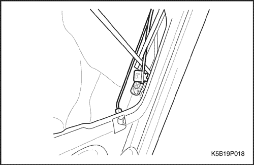
Cerradura de la puerta delantera
Procedimiento de desmontaje
- Desconecte el cable negativo de la batería en caso de que el vehículo esté equipado con sistema de cierre centralizado.
- Desmonte el panel de guarnecido. Consulte el apartado "Guarnecido de estanqueidad de la puerta" de esta sección.
- Desmonte de la cerradura la varilla del tirador exterior de la puerta.
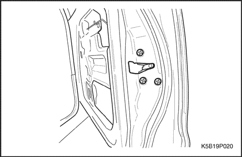
- Quite los tornillos y desmonte la cerradura de la puerta delantera.
Importante: Desconecte el conector del actuador en caso de que el vehículo esté equipado con sistema de cierre centralizado.
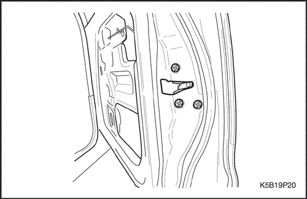
Procedimiento de montaje
Aviso: Metales distintos en contacto directo pueden corroerse rápidamente. Asegúrese de utilizar los elementos de sujeción correctos para evitar una corrosión prematura.
- Coloque la cerradura de la puerta delantera con sus tornillos.
Apretar
Apriete los tornillos de la cerradura de la puerta delantera hasta 8 N•m (71 lb-pulg.).
Importante: Enchufe el conector del actuador en caso de que el vehículo esté equipado con sistema de cierre centralizado.
- Conecte a la cerradura la varilla del tirador de la puerta exterior y la varilla de la chaveta.
- Monte el guarnecido de estanqueidad. Consulte el apartado "Guarnecido de estanqueidad de la puerta" de esta sección.
- Conecte el cable negativo de la batería en caso de que el vehículo esté equipado con sistema de cierre centralizado.
Cerradura de seguridad para niños de la puerta trasera
Procedimiento de desmontaje
- Desconecte el cable negativo de la batería en caso de que el vehículo esté equipado con sistema de cierre centralizado.
- Desmonte el panel de guarnecido de la puerta. Consulte la Sección 9G, Guarnecido interior.
- Desmonte el guarnecido de estanqueidad de la puerta. Consulte el apartado "Guarnecido de estanqueidad de la puerta" de esta sección.
Importante: Si se trata de la gama de lujo, desmonte el guarnecido de estanqueidad una vez desmontado el soporte del tirador de bolsillo de la puerta.
- Quite el tornillo y la pieza de guía.
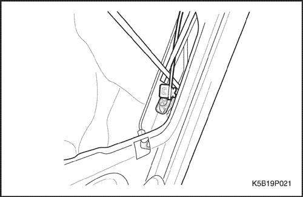
- Desmonte de la cerradura la varilla del tirador exterior de la puerta.
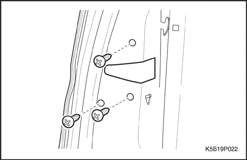
- Quite los tornillos y desmonte la cerradura de la puerta.
Importante: Desconecte el conector del actuador en caso de que el vehículo esté equipado con sistema de cierre centralizado.
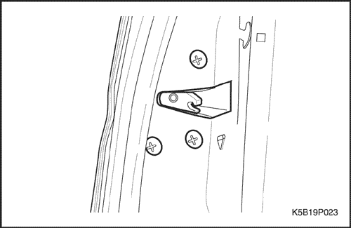
Procedimiento de montaje
Aviso: Metales distintos en contacto directo pueden corroerse rápidamente. Asegúrese de utilizar los elementos de sujeción correctos para evitar una corrosión prematura.
- Monte la cerradura de la puerta trasera con sus tornillos.
Apretar
Apriete los tornillos de la cerradura de la puerta trasera hasta 8 N•m (71 lb-pulg.).
Importante: Enchufe el conector del actuador en caso de que el vehículo esté equipado con sistema de cierre centralizado.
- Conecte a la cerradura la varilla del tirador exterior de la puerta.
- Monte el carril de la guía con su tornillo.
Apretar
Apriete los tornillos del carril guía hasta 7 N•m (62 lb-pulg.).
- Monte el guarnecido de estanqueidad. Consulte el apartado "Guarnecido de estanqueidad de la puerta" de esta sección.
- Monte el panel de guarnecido de la puerta. Consulte la Sección 9G, Guarnecido interior.
- Conecte el cable negativo de la batería en caso de que el vehículo esté equipado con sistema de cierre centralizado.
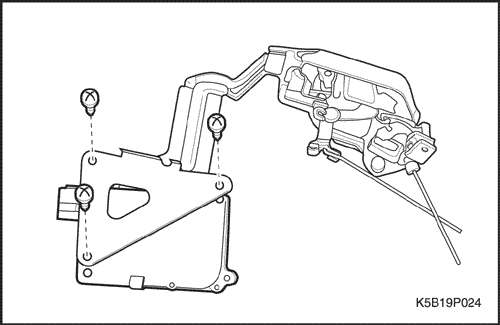
Actuador del cierre centralizado
Procedimiento de desmontaje
- Desconecte el cable negativo de la batería.
- Desmonte el guarnecido de estanqueidad de la puerta. Consulte el apartado "Guarnecido de estanqueidad de la puerta" de esta sección.
- Desmonte el conjunto de la cerradura de la puerta. Consulte el apartado "Guarnecido de estanqueidad de la puerta" de esta sección.
- Quite los tornillos y el actuador del conjunto de la cerradura de la puerta.
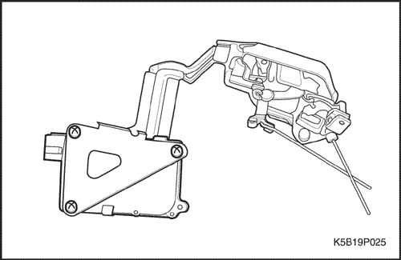
Procedimiento de montaje
- Monte el actuador con sus tornillos en el conjunto de la cerradura de la puerta.
Apretar
Apriete los tornillos de la cerradura de la puerta hasta 8 N•m (71 lb-pulg.).
- Monte el conjunto de la cerradura en el vehículo. Consulte el apartado "Guarnecido de estanqueidad de la puerta" de esta sección.
- Conecte el cable negativo de la batería.
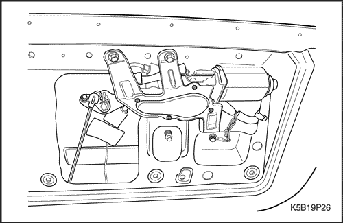
Cerradura del portón trasero
Procedimiento de desmontaje
- Desmonte el panel de acabado del portón trasero. Consulte la Sección 9G, Guarnecido interior.
- Quite los tornillos y la varilla de cierre del cilindro de la cerradura del portón trasero.
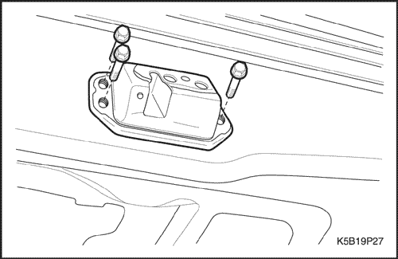
- Retire los tornillos y la cerradura del portón trasero.
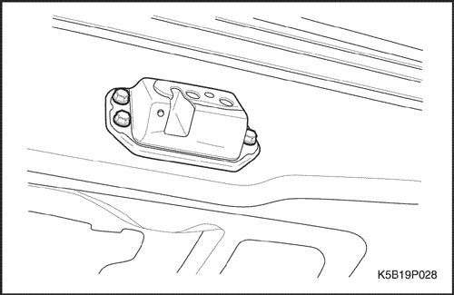
Procedimiento de montaje
- Monte la cerradura del portón trasero con sus tornillos.
Apretar
Apriete los tornillos de la cerradura del portón trasero hasta 8 N•m (71 lb-pulg.).
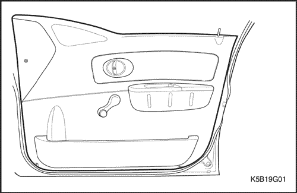
Tirador interior de la puerta
Procedimiento de desmontaje
- Desmontaje del tornillo y del tirador interior de la puerta.
Procedimiento de montaje
- Monte el tirador interior de la puerta con su tornillo.
Apretar
Apriete el tornillo del tirador interior de la puerta hasta 3 N•m (27 lb-pulg.).
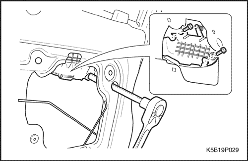
Tirador exterior de la puerta delantera
Procedimiento de desmontaje
- Desconecte el cable negativo de la batería.
- Desmonte las varillas de la cerradura de la puerta delantera.
- Retire los tornillos y el tirador exterior de la puerta delantera.
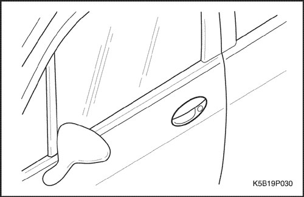
Procedimiento de montaje
- Monte el tirador exterior de la puerta delantera con sus tornillos.
Apretar
Apriete los tornillos del tirador exterior de la puerta hasta 4,5 N•m (40 lb-pulg.).
- Monte las varillas de la cerradura de la puerta delantera.
- Conecte el cable negativo de la batería.
Tirador exterior de la puerta trasera
Procedimiento de desmontaje
- Desconecte el cable negativo de la batería.
- Desmonte la cerradura de la puerta trasera. Consulte el apartado "Cerradura de seguridad para niños de las puertas traseras " de esta sección.
- Retire los tornillos y el tirador exterior de la puerta trasera.
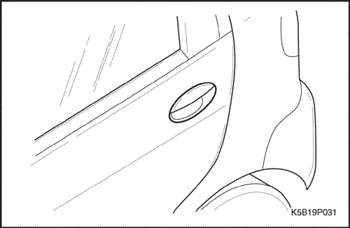
Procedimiento de montaje
- Monte el tirador exterior de la puerta trasera con sus tornillos.
Apretar
Apriete los tornillos del tirador exterior de la puerta trasera hasta 4,5 N•m (40 lb-pulg.).
- Monte la cerradura de la puerta trasera. Consulte el apartado "Cerradura de seguridad para niños de las puertas traseras" de esta sección.
- Conecte el cable negativo de la batería.
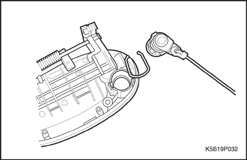
Cilindro de la cerradura de la puerta
Procedimiento de desmontaje
- Desconecte el cable negativo de la batería.
- Desmonte el tirador exterior de la puerta. Consulte el apartado "Tirador exterior de la puerta delantera" de esta sección.
- Desmonte el cilindro de la cerradura de la varilla del tirador exterior de la puerta.
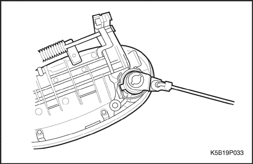
Procedimiento de montaje
- Monte el cilindro de la cerradura de la puerta con el clip.
- Monte el tirador exterior de la puerta. Consulte el apartado "Tirador exterior de la puerta delantera" de esta sección.
- Conecte el cable negativo de la batería.
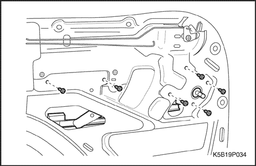
Elevalunas manual
Procedimiento de desmontaje
- Desmonte el cristal. Consulte la Sección 9L, Lunas y espejos.
- Retire los tornillos y el elevalunas.

Procedimiento de montaje
- Monte el elevalunas con sus tornillos.
Apretar
Apriete los tornillos del elevalunas hasta 7 N•m (62 lb-pulg.).
- Monte el cristal. Consulte la Sección 9L, Lunas y espejos.
Elevalunas eléctrico
Procedimiento de desmontaje
- Desconecte el cable negativo de la batería.
- Desmonte el cristal. Consulte la Sección 9L, Lunas y espejos.
- Desenchufe el conector eléctrico del motor del elevalunas.
- Retire los tornillos y el conjunto del elevalunas.
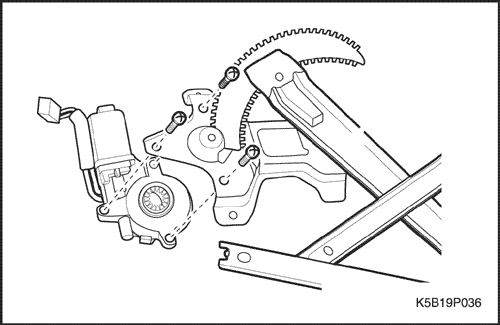
- Quite los tornillos y el motor del elevalunas del elevalunas eléctrico.
Precaución: Tenga cuidado al separar el motor del elevalunas. Podría hacerse daño.
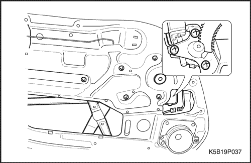
Procedimiento de montaje
- Monte el conjunto del motor del cristal con sus tornillos en el elevalunas.
Apretar
Apriete los tornillos del motor del elevalunas hasta 7 N•m (62 lb-pulg.).
- Monte el conjunto del elevalunas con sus tornillos.
Apretar
Apriete los tornillos del conjunto del elevalunas hasta 7 N•m (62 lb-pulg.).
- Enchufe el conector eléctrico del motor del elevalunas.
- Monte el cristal. Consulte la Sección 9L, Lunas y espejos.
- Conecte el cable negativo de la batería.
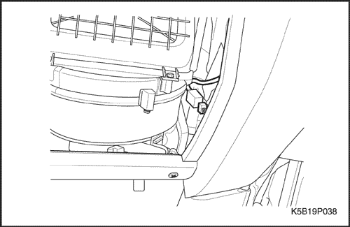
Conjunto de la puerta delantera
Procedimiento de desmontaje
- Desconecte el cable negativo de la batería.
- Desenchufe el conector eléctrico que hay debajo del panel de instrumentos.
Importante: Cuando se trate de la puerta delantera del pasajero, desmonte primero la guantera.
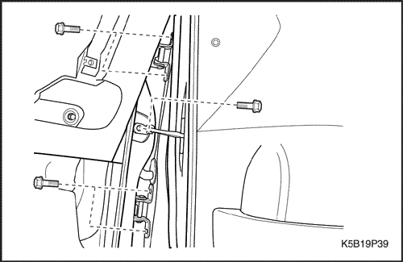
- Desmonte la bisagra de la puerta y los tornillos de la varilla para mantener abierta la puerta.
- Desconecte el pasacables carrocería/goma.
- Desmonte el conjunto de la puerta delantera.
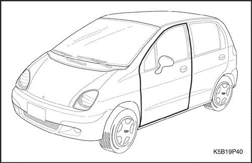
Procedimiento de montaje
Aviso: Metales distintos en contacto directo pueden corroerse rápidamente. Asegúrese de utilizar los elementos de sujeción correctos para evitar una corrosión prematura.
- Conecte el pasacables de goma que une la puerta a la carrocería.
- Con la ayuda de otro mecánico, sujete un poco la puerta delantera con sus tornillos.
- Ajuste la puerta para que encaje correctamente.
- Apriete los tornillos que unen las bisagras a la carrocería.
- Monte la varilla para mantener abierta la puerta con su tornillo.
Apretar
Apriete los tornillos de fijación de la bisagra de la puerta a la carrocería hasta 35 N•m (26 lb-pie).
Apriete los tornillos de fijación de la bisagra a la puerta hasta 15 N•m (11 lb-pie).
- Enchufe el conector eléctrico.
- Conecte el cable negativo de la batería.
- Efectúe la prueba de infiltración de agua. Consulte la sección 9I, Infiltraciones de agua.
- Compruebe si oye ruido de viento. Consulte la Sección 9J, Ruido del viento.
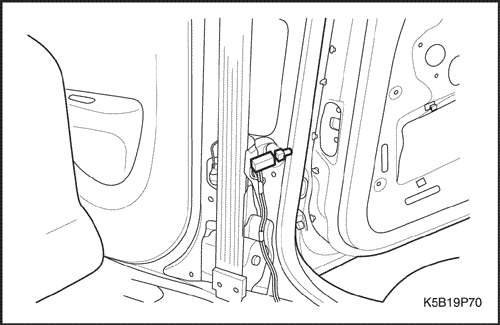
Conjunto de la puerta trasera
Procedimiento de desmontaje
- Desconecte el cable negativo de la batería.
- Desmonte el panel inferior de guarnecido del montante B. Consulte la Sección 9G, Guarnecido interior.
- Desenchufe el conector eléctrico de la puerta trasera.
- Desmonte la bisagra de la puerta y los tornillos de la varilla para mantener abierta la puerta.
- Retire el pasacables de goma que une la puerta a la carrocería.
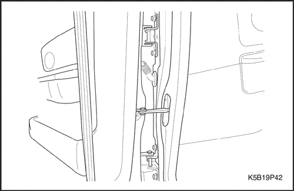
- Desmonte el conjunto de la puerta trasera.
Procedimiento de montaje
Aviso: Metales distintos en contacto directo pueden corroerse rápidamente. Asegúrese de utilizar los elementos de sujeción correctos para evitar una corrosión prematura.
- Conecte el pasacables de goma que une la puerta a la carrocería.
- Con la ayuda de otro mecánico, sujete un poco la puerta trasera con sus tornillos.
- Ajuste la puerta para que encaje correctamente.
- Monte la varilla para mantener abierta la puerta con su tornillo.
Apretar
Apriete los tornillos de fijación de la bisagra de la puerta a la carrocería hasta 35 N•m (26 lb-pie).
Apriete los tornillos de fijación de la bisagra a la puerta hasta 15 N•m (11 lb-pie).
- Enchufe el conector eléctrico de la puerta trasera.
- Conecte el cable negativo de la batería.
- Efectúe la prueba de infiltración de agua. Consulte la sección 9I, Infiltraciones de agua.
- Compruebe si oye ruido de viento. Consulte la Sección 9J, Ruido del viento.
Portón trasero
Procedimiento de desmontaje
- Desconecte el cable negativo de la batería.
- Desmonte el panel de guarnecido del paso de rueda del maletero. Consulte la Sección 9G, Guarnecido interior.
- Desenchufe el conector eléctrico del portón trasero.
- Desmonte el soporte del portón trasero. Consulte el apartado "Soporte del portón trasero" de esta sección.
- Retire el pasacables de goma que une el portón trasero a la carrocería.
- Quite los tornillos de la bisagra del portón trasero.
Procedimiento de montaje
Aviso: Metales distintos en contacto directo pueden corroerse rápidamente. Asegúrese de utilizar los elementos de sujeción correctos para evitar una corrosión prematura.
- Conecte el pasacables de goma que une el portón trasero a la carrocería.
- Con la ayuda de otro mecánico, asegure un poco el portón trasero con sus tornillos.
- Ajuste el portón trasero para que encaje correctamente.
Apretar
Apriete los tornillos de la bisagra del portón trasero hasta 20 N•m (15 lb-pie).
- Monte el soporte del portón trasero. Consulte el apartado "Soporte del portón trasero" de esta sección.
- Enchufe el conector eléctrico del portón trasero.
- Monte el panel de guarnecido del paso de rueda del maletero. Consulte la Sección 9G, Guarnecido interior.
- Conecte el cable negativo de la batería.
Cilindro de la cerradura del portón trasero
Procedimiento de desmontaje
- Desconecte el cable negativo de la batería.
- Abra el portón trasero.
- Desmonte el conjunto del motor del limpiaparabrisas de la luneta trasera. Consulte la sección 9D, Sistema limpia/lavaparabrisas.
- Quite las tuercas y desmonte el bombín de la cerradura del portón trasero.
Procedimiento de montaje
- Coloque las tuercas y el cilindro de la cerradura del portón trasero.
Apretar
Apriete las tuercas del cilindro de la cerradura del portón trasero hasta 3 N•m (27 lb-pulg.).
- Monte el conjunto del motor del limpiaparabrisas de la luneta trasera. Consulte la sección 9D, Sistema limpia/lavaparabrisas.
- Conecte el cable negativo de la batería.
Bisagra de la puerta
Procedimiento de desmontaje
- Con la ayuda de otro mecánico, quite los tornillos y desmonte la bisagra de la puerta y de la carrocería.
Procedimiento de montaje
Aviso: Metales distintos en contacto directo pueden corroerse rápidamente. Asegúrese de utilizar los elementos de sujeción correctos para evitar una corrosión prematura.
- Con la ayuda de otro mecánico, monte la bisagra en la puerta y en la carrocería con los tornillos.
Apretar
Apriete los tornillos de fijación de la bisagra de la puerta a la carrocería hasta 35 N•m (26 lb-pie).
Apriete los tornillos de fijación de la bisagra a la puerta hasta 15 N•m (11 lb-pie).
Varilla para mantener abierta la puerta
Procedimiento de desmontaje
- Desmonte el guarnecido de estanqueidad de la puerta. Consulte el apartado "Guarnecido de estanqueidad de la puerta" de esta sección.
- Quite los tornillos de fijación de la varilla para mantener abierta la puerta a la carrocería.
- Desmonte la varilla para mantener abierta la puerta.
Procedimiento de montaje
Aviso: Metales distintos en contacto directo pueden corroerse rápidamente. Asegúrese de utilizar los elementos de sujeción correctos para evitar una corrosión prematura.
- Monte la varilla para mantener abierta la puerta con sus tornillos en la puerta y en la carrocería.
Apretar
Apriete los tornillos de fijación de la varilla para mantener abierta la puerta a la carrocería hasta 35 N•m (26 lb-pie).
Apriete los tornillos de fijación de la varilla para mantener abierta la puerta a la puerta hasta 5 N•m (44 lb-pulg.).
- Monte el guarnecido de estanqueidad de la puerta. Consulte el apartado "Guarnecido de estanqueidad de la puerta" de esta sección.
Burlete del canal interior (estándar)
Procedimiento de desmontaje
- Desmonte el burlete del canal.
Procedimiento de montaje
- Monte el burlete del canal.
Burlete del canal interior (de lujo)
Procedimiento de desmontaje
- Desmonte el guarnecido de la puerta. Consulte la Sección 9G, Guarnecido interior.
- Desmonte del guarnecido de la puerta el burlete del canal.
Procedimiento de montaje
- Monte el burlete del canal en el guarnecido de la puerta.
- Doble las lengüetas de retención para asegurar el burlete del canal en el panel de guarnecido de la puerta.
- Monte el panel de guarnecido de la puerta. Consulte la Sección 9G, Guarnecido interior.
Moldura exterior del canal
Procedimiento de desmontaje
- Quite el tornillo y el burlete del canal.
Procedimiento de montaje
- Presione el burlete del canal exterior en la puerta.
- Ponga el tornillo del burlete.
Burlete de la puerta
Procedimiento de desmontaje
- Quite el tornillo de la varilla para mantener abierta la puerta.
- Retire el clip, los pasadores y el burlete de la puerta.
Procedimiento de montaje
- Monte el burlete de la puerta con los clips y los pasadores.
- Ponga el tornillo de la varilla para mantener abierta la puerta.
Guarnecido de estanqueidad de la puerta
Procedimiento de desmontaje
- Desmonte el panel de guarnecido de la puerta. Consulte la Sección 9G, Guarnecido interior.
- Desmonte el guarnecido de estanqueidad de la puerta.
Procedimiento de montaje
- Monte el guarnecido de estanqueidad de la puerta.
- Monte el panel de guarnecido de la puerta. Consulte la Sección 9G, Guarnecido interior.
Burlete de la abertura de la puerta
Procedimiento de desmontaje
- Marque con un rotulador soluble el borde del burlete de la abertura de la puerta.
- Despegue parcialmente el panel inferior de guarnecido del montante B.
- Desmonte el burlete de la abertura de la puerta.
Procedimiento de montaje
- Monte el burlete de la abertura de la puerta de forma que coincida con la marca.
- Monte el panel de acabado basculante y el panel inferior de guarnecido del montante B.
Manija del elevalunas manual
Procedimiento de desmontaje
- Quite el clip y el tirador del elevalunas.
Procedimiento de montaje
- Monte la palanca del elevalunas con su clip.
Soporte del portón trasero
Procedimiento de desmontaje
- Abra y sujete convenientemente el portón trasero.
- Desenrosque y retire el conjunto de soporte mediante gas del portón trasero y de la carrocería.
Procedimiento de montaje
- Monte el soporte del portón trasero con sus espárragos de la rótula.
Apretar
Apriete el espárrago del muelle de gas del portón trasero hasta 22 N•m (16 lb-pie).
DESCRIPCIÓN GENERAL Y FUNCIONAMIENTO DEL SISTEMA
Cerradero de la puerta
Las cerraduras de cada una de las puertas delanteras y traseras constan de un trinquete con dos tornillos roscados sobre una placa soporte situada en los montantes B y C. La puerta queda asegurada en posición de cierre cuando la horquilla de la cerradura salta y engancha el cierre.
Cerradura de seguridad para niños de la puerta trasera
La cerradura de seguridad para niños de las puertas traseras evita que los pasajeros, en especial los niños, abran las puertas traseras del vehículo desde dentro.
Para activar estas cerraduras, desplace las palancas de las dos puertas traseras a la posición de bloqueo. A continuación, cierre las dos puertas. Los pasajeros de atrás no podrán abrir las puertas desde el interior del vehículo.
Para desactivar el bloqueo de seguridad para niños de las puertas traseras, desbloquee la puerta desde el interior del vehículo y abra la puerta desde el exterior. Desplace la palanca a la posición de desbloqueo. Ahora, la puerta trasera funcionará normalmente.
Cerraduras eléctricas
Las cerraduras eléctricas utilizan un solenoide que está situado en el interior de cada conjunto de cerradura. Las cerraduras de las puertas se activan mediante el actuador del tirador interior de la puerta o mediante el cilindro de la cerradura sólo en la puerta del conductor. Cuando se abre o se cierra la puerta del conductor, mediante el actuador o el cilindro de la cerradura, se abren o se cierran todas las puertas a la vez.
Elevalunas eléctricos
Los elevalunas eléctricos se controlan mediante interruptores eléctricos situados en los paneles de guarnecido de las puertas delanteras y se accionan mediante un motor en cada elevalunas. Los cristales se bajan pulsando el interruptor y se suben tirando del interruptor hacia arriba. La ventanilla dejará de moverse cuando se suelte el interruptor o cuando esté completamente abierta o cerrada.
Elevalunas eléctricos
Este vehículo está equipado con soportes de gas. Los soportes sostienen convenientemente el portón trasero cuando éste se abre.
El soporte contiene gas comprimido a alta presión. Así pues, tenga cuidado de no desprenderlo, agujerearlo, aplicarle calor o llama porque podría explotar.